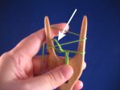
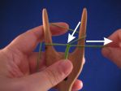

Hurdant garn borde jag använda?
Speciell i början är det viktigt att garnet är ganska slätt, inte luddigt. Jag undervisar med sk. pärlgarn i bomull för att jag råkar ha en stor påse pärlgarnsnystan, men också t.ex. virkgarn i bomull fungerar bra. Återskapare använder silke, ull och lin, och de är alla bra så länge garnet inte har förtjockningar. När din teknik blir bättre, kan du använda också luddigare garn. Om garnet är mycket löst spunnet kan det separera sig, vilket är lite problematiskt. Om du inte behöver vara historiskt korrekt, kan du pröva viskos eller slät akryl. Du kan även pröva på jämntjocka specialgarn, men då måste du kanske slynga lite lösare. Jag har några exempel i min blogg.
Hur mycket garn behöver jag?
Jag använder alltid regeln 10:1. Till exemple 25 meter pärlgarn blir 2,3-2,5 meters snodd. På sätt och vis är det möjligt att byta garn under slyngning, men det stället kommer alltid att vara lite tjockare, så jag försöker att ha tillräckligt med garn innan jag börjar slynga en snodd.
Behöver jag flera slynggafflar?
Med en lagom stor slynggaffel kan du använda vilken garntjocklek som helst, även mycket tunna garn som knyppelgarn eller sytråd. Den kritiska faktorn är avståndet mellan hornen, den färdiga snodden måste rymmas där. Det är också lättare att lyfta öglorna om där är plats för ens fingrar mellan snodden och hornet.

Hurdan slynggaffel borde jag skaffa mig?
Att välja slynggaffel är en smaksak. Jag föredrar en slynggaffel som är cirka 5 cm bred och har raka horn, den modellen passa bäst min teknik. Andra föredrar en lyrformad gaffel med böjda horn och inget handtag. Vissa gillar riktigt små slynggafflar och använder ett nål eller en sticka att lyfta öglorna. Om du vill se olika sorters slynggafflar, kolla min samling. Jag har delat upp den i trägafflar och slynggafflar av andra material. Om du är behänding, kan du tälja en egen slynggaffel. Eller kanske vill du göra flera olika med en 3D-skrivare?
Varför är min snodd så lös/fast?
Det är lättare att kontrollera fastheten av en snodd om man först drar öglan till höger, bort från gaffeln (inte upp) tills öglan i mitten sätter sig på garnet, och sedan lyfter man öglan över hornet. (Klicka foton för att se större bilder.)
|  |  |  |
{kind=link}
{kind=link}
Jag har en liten video om tekniken. Kom ihåg, först till höger, sedan upp.
Varför är det så svårt att få tag i öglan?
När du slynger vanlig fyrkantig snodd, är det mycket lättare att fatta tag i öglan framför gaffeln (mellan snodden och hornet) än direkt på hornet. Om din gaffel är mycket liten finns det kanske inte utrymme för fingrarna där, men med de flesta slynggafflarna har du plats for tumme och pekfinger mellan snodden och hornet.
Märk att om du håller på med en platt snodd, måste du fatta tag i öglan bakom gaffeln för att garnets rutt är annorlunda när man håller på med platt snodd.
Jag lyfter öglan framför slynggaffeln även när jag jobbar med en liten gaffel och använder en pinne. Man kan sätta in pinnen antingen nerifrån eller uppifrån.
Vad kan jag göra när handleden tröttnar och jag får handkramper?
Normalt slynger jag med garnet i höger hand (en video om tekniken). Pga detta vilar slynggaffeln i min vänstra hand i mycket lätt grepp och jag håller den nästan vågrätt som du kan se i denna video. På det här sättet är vänstra vristens position mer naturlig än när man håller gaffeln upprätt. Jag kan använda en slynggaffel med eller utan handtag, men bredden är viktig så att gaffeln sitter bra i handen och är lätt att vända. Jag använder mycket sällan benslynggafflarna i samlingen för att de är små, tunga och hala och jag måste greppa dem hårt för att de inte skall falla. Mina favoritgafflar är cirka 5 cm breda och har rundade kanter. Om du får kramper i vänstra handen, är det möjligt att din slynggaffel är för liten eller för stor i förhållande till din hand eller så är den för hal. Storleken kan man inte påverkar utan då måste man byta till en annan gaffel, men om en trägaffel är för hal, kan man använda grovt sandpapper för att göra greppytan lite grövre.
Är slynggaffeln ett medeltida verktyg?
Jaha, det är en svår fråga. Från vikingatiden har vi verktyg som kunde vara slynggafflar. Från 1700-talet och senare tider har man slynggafflar som ser ut som de mest vanliga trägafflarna. Men mellan vikingatiden och 1700-talet har man egentligen ingenting. Så jag hänvisar bara till ett par artiklar:
- Evidence for lucets and lucet braiding in Early Medieval Britain and Scandinavia
- The Use of the Lucet in the Fifteenth Century
Inom Society for Creative Anachronism (i Sverige Nordmarks furstendömme) godkänns en slynggaffel som ett vikinga-/medeltida verktyg. Också många andra grupper accepterar slynggafflar och gaffelsnoddar, men det är bäst att kolla med den egna gruppen om man vill t.ex. slynga snoddar på evenemang eller sälja slyngade snoddar.
Som en eftertanke kan jag tillägga att det går att göra en slyngad snodd utan en slynggaffel, med bara fingrarna. Jag finner det dock mycket krångligare än slyngning med en gaffel.